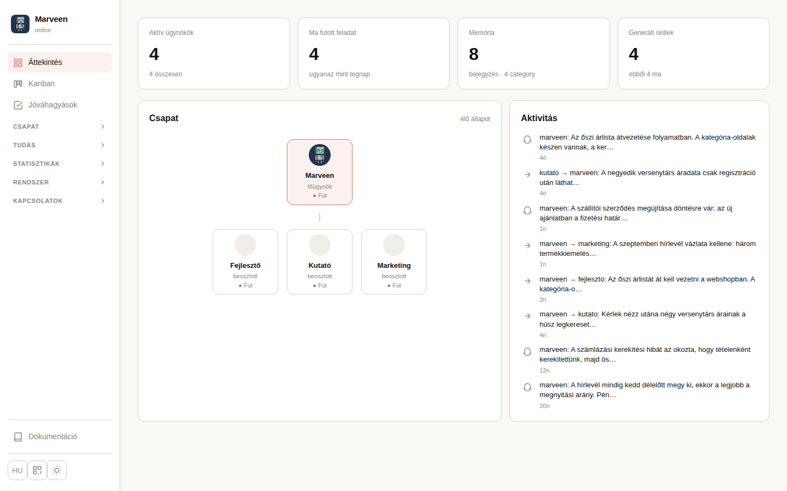

Áttekintés overview
Egy képernyős pillantás a rendszer aktuális állapotára: hány ügynök fut éppen, hány feladat futott le ma, mennyi tudás (memória, skill) gyűlt össze, valamint a csapat felépítése és a legutóbbi tevékenységek. Ez a kezdőoldal, ide érkezel bejelentkezés után.

Statisztika-csempék
| Csempe | Mit mutat |
|---|---|
| Aktív ügynökök | Hány ügynök folyamatban lévő munkamenete fut éppen, a beállított ügynökök teljes létszámához képest (pl. "4 összesen"). |
| Ma futott feladat | Hány feladat futott le a mai napon, és zárójelben az eltérés a tegnapi naphoz képest (pl. "-29 a tegnapihoz"). |
| Memória | Az összes elmentett memória-bejegyzés száma, és hány kategóriába (hot/warm/cold/shared) vannak szétosztva. |
| Generált skillek | A rendszer öntanulásából (ismétlődő munkafolyamatokból) eddig létrehozott, újrafelhasználható skillek száma, és hány készült ma. |
Csapat kártya
A főügynök és a beosztott ügynökök hierarchiája fastruktúraként, valós idejű státusszal (Fut / Áll) minden dobozon. Ugyanezt a nézetet mutatja az Ügynökök oldal "Org chart" nézete is.
Aktivitás kártya
A legutóbbi ügynök-események élő listája (pl. feladat-delegálás, memória-mentés), relatív időbélyeggel ("4p", "26p"). Ugyanaz az adatforrás, mint az önálló Aktivitás oldalé, csak itt csak a legutóbbi néhány esemény látszik.
Kanban kanban
A csapat teljes feladatlistája egy táblán, státusz szerint oszlopokba rendezve. Ide kerül minden projekt-feladat: az orchestrator (Marween) kártyaként rögzíti, kioszt egy felelősnek, aki a kártyán állapotot vált és kommentál.
Nézetváltás (fenti gombsor)
Tábla
Az alap, oszlopos nézet, ez az alapértelmezett.
Idővonal
Gantt-szerű, időrendi nézet a határidős kártyákról, heti/havi/negyedéves szűréssel és "csak lejárt/közelgő" jelölővel.
Archiváltak
Átvált egy külön oldalra, lásd lent: Archivált kártyák.
Oszlopok és kártyák
Öt oszlop: Tervezett, Folyamatban, Várakozik, Tesztelés, Kész. Minden oszlop fejlécén a kártyaszám látszik; ha az adminisztrátor korlátot (WIP-limitet) állított be az oszlopra, a szám 4/5 formátumra vált, és a kihasználtság szerint színeződik (szürke → sárga → narancs → piros, villogva, ha túllépted).
Új kártya ("+" gomb az oszlopfejlécben)
Egy üres kártyát hoz létre abban az oszlopban (státuszban), ahol a gombra kattintottál.
Kártya mozgatása (drag & drop)
Egy kártyát másik oszlopba húzva megváltoztatja annak státuszát.
Alfeladat hozzáadása
Egy szülő-kártya (nem alfeladat) részletező nézetében "Új alfeladat" formmal vehető fel.
Alfeladat törlése
Az alfeladat sorában megjelenő Törlés gombbal, megerősítő párbeszéd után.
Címkék
A kártya részletező nézetében szín-kódolt címkék rendelhetők hozzá (meglévő kiválasztásával, vagy új létrehozásával), és bármelyik egy gombbal levehető. A kártyák alján legfeljebb 3 pille jelenik meg, a többit egy "+N" jelvény takarja.
Csoportosítás és szűrés
A tábla feletti vezérlősorban: Projekt szűrő (legördülő), Csoportosítás (Nincs / Felelős szerint / Prioritás szerint, az utóbbi kettő vízszintes sávokra, ún. swimlane-ekre bontja a táblát), Oszlopok chipek (mely oszlopok legyenek láthatók), Felelős szűrő, és a címke gyors-szűrők. A választásaid a böngésződben megmaradnak, nem kell minden megnyitáskor újra beállítani.
Beakadt és öregedő kártyák
Minden nem lezárt kártyán automatikusan megjelenik, ha régóta nem mozdult: bal oldali színes csík (sárga = 1 napja, narancs = 3 napja, piros villogó = 1 hete változatlan) és egy homokóra-jelvény ("⏳ 4d") a jobb felső sarokban.
Automatikus audit (4 óránként)
A rendszer 4 óránként (8/12/16/20 órakor) magától átnézi a táblát.
Alfejezet: Archivált kártyák
Elérés: a Kanban tábla tetején az "Archiváltak" gomb (nincs önálló bal oldali menüpontja).
A táblán már nem látható (mert automatikusan vagy kézzel archivált), de nem törölt kártyák dedikált, kereshető nézete.
Keresés és szűrők
Szabad szöveges keresés (cím, projekt, felelős), valamint projekt, címke és archiválási dátumtartomány szerinti szűrés.
Visszaállítás
Minden sorban egy "Visszaállítás" gomb.
Jóváhagyások approvals
Az ügynökök jóváhagyást igénylő kéréseinek gyűjtőhelye. Ha egy ügynök egy olyan kategóriájú műveletet szeretne végrehajtani, amit a beállított autonómia-szint szerint előbb jóvá kell hagyatnia, itt jelenik meg a kérés, határidővel.
Statisztika-csempék
Négy szám: Várakozó, Jóváhagyott, Elutasított, Lejárt. A várakozó darabszám a bal oldali menü "Jóváhagyások" pontján is megjelenik piros jelvényként.
Figyelmeztető sáv
Ha van legalább egy várakozó kérés, egy sáv jelenik meg a statisztikák felett: melyik ügynöktől, milyen kategóriában, mióta vár, és mennyi ideje van hátra a döntésig.
Szűrők
Státusz (Várakozó / Jóváhagyott / Elutasított / Lejárt), Ügynök és Kategória szerint szűkíthető a lista.
A táblázat oszlopai
| Oszlop | Jelentés |
|---|---|
| Időpont | Mikor érkezett a kérés. |
| Ágens | Melyik ügynök kéri a jóváhagyást. |
| Kategória | A kért művelet típusa (pl. egy adott autonómia-kategória kulcsa). |
| Tevékenység | Az ügynök saját szavaival leírt indoklás, mit szeretne tenni és miért. Ha hosszú, csonkolva jelenik meg, egérrel fölé állva a teljes szöveg olvasható. |
| Státusz | Várakozó / Jóváhagyott / Elutasított / Lejárt, színes jelvénnyel. |
| Határidő | Visszaszámláló a döntésig hátralévő időből; öt percnél kevesebb esetén pirosra vált. |
| Döntés | Várakozó soroknál a Jóváhagyás/Elutasítás gombok, lezárt soroknál ki döntötte el és mikor. |
Jóváhagyás
A sor "Jóváhagyás" gombja.
Elutasítás
A sor "Elutasítás" gombja.
Ügynökök agents
A teljes ügynök-flotta kezelése egy helyen: kik dolgoznak, milyen szerepben, milyen modellel, és élnek-e éppen. Innen hozol létre új ügynököt, itt állítod le/indítod el, és itt viszed át egyik gépről a másikra.
Két nézet
Kártyák
Minden ügynök egy kártya: név, státusz (Fut/Áll), avatar. A rácsban itt van az "Új ügynök" kártya is.
Org chart
Ugyanaz a hierarchikus fastruktúra, amit az Áttekintés Csapat kártyája is mutat: a főügynök és a beosztott ügynökök jelentési viszonyai. Ez korábban önálló "Csapat" menüpont volt, mára ide lett összevonva.
Új ügynök létrehozása
Az "Új ügynök" kártyára kattintva egy varázsló kéri be a nevet, a rövid leírást (szerepet), a modellt és egy avatart. Ezekből a rendszer legenerálja az ügynök személyiségét (CLAUDE.md és SOUL.md fájlok).
Ügynök részletei
Egy kártyára kattintva nyílik a részletező ablak, fülekre bontva: alapadatok, csatorna (Telegram/Slack párosítás), skillek, és a csapat-viszonyok (kinek a beosztottja).
Indítás / Leállítás
A részletező ablak tetején.
Törlés
A részletező ablakban, megerősítő párbeszéd után.
Exportálás
Egy hordozható .tar.gz csomagba menti az ügynök személyiségét és beállításait, amit egy másik gépre átvihetsz. Rákérdez, hogy a titkokat (csatorna-token, párosítási állapot) is vegye-e bele.
Importálás
A Kártyák nézet fejlécében: egy korábban exportált csomag (egy ügynöké vagy az egész flottáé) visszatölthető.
Modell elemzés
Kiértékeli minden ügynökre, hogy a hozzárendelt Claude-modell (pl. Sonnet, Haiku, Opus) összhangban van-e a tényleges terheléssel (token-fogyasztás, kanban-terhelés, integrációk mélysége), és javasol egy megfelelőbb modellt, ha indokolt.
Aktivitás activity
Élő, valós idejű állapotkép minden futó ügynökről: éppen dolgozik, tétlen, hibára futott, vagy le van állítva. Az oldal 3 másodpercenként frissül magától, amíg nyitva van. Ne keverd össze az Áttekintés Aktivitás-kártyájával: az egy eseménynapló (mit csinált egy ügynök), ez itt a jelenlegi állapot.
Állapotjelvények
| Jelvény | Jelentés |
|---|---|
| Dolgozik | Az ügynök éppen aktívan feldolgoz valamit. |
| Tétlen | Fut, de éppen nem csinál semmit. |
| Ismeretlen | A rendszer nem tudta megállapítani az állapotot a session tartalmából. |
| Hiba | Hiba látszik az ügynök session-jén. |
| Leállítva | Az ügynök session-je nem fut. |
Ha egy ügynök nem a szokásos, önállóan dolgozó módban van (pl. minden lépésnél megerősítést kérő módban ragadt), egy külön jelvény hívja fel erre a figyelmet.
Kártya megnyitása: élő terminál
Egy futó ügynök kártyájára kattintva egy élő terminál-ablak nyílik, ami az ügynök tényleges munkamenetét mutatja, valós időben.
Üzenetek messages
Az ügynökök egymás közötti üzenetváltásának megtekintése, és közvetlen üzenetküldés egy kiválasztott ügynöknek, chat-szerű felületen.
Bal oldalon az ügynökök listája, jobb oldalon a kiválasztott ügynökkel folytatott beszélgetés-szál. Egy ügynökre kattintva megnyílik a vele (és mások által neki) küldött üzenetek időrendi listája.
Üzenet küldése
A szál alján egy szövegmező és a Küldés gomb.
Ütemezések tasks
Időzített, visszatérő feladatok kezelése: mikor és melyik ügynök fusson le, milyen utasítással. Ez az az oldal, ahol az automatikus napi összefoglalókat, emlékeztetőket és rendszeres ellenőrzéseket állítod be.
Három nézet
Lista, Napi idővonal és Heti nézet közül választhatsz ugyanarra az adatra, a fejléc gombjaival.
Két feladattípus
| Típus | Viselkedés |
|---|---|
| Feladat | Minden lefutás után jelentést kapsz az eredményről. |
| Heartbeat | Csendes háttér-ellenőrzés: az ügynök csak akkor szól, ha talál valami fontosat vagy sürgőset, egyébként nem küld semmit. |
Heartbeat típusnál előre elkészített sablonok közül is választhatsz (pl. naptár-ellenőrzés, email-ellenőrzés, kanban-határidők, vagy mindhárom együtt), amik kitöltik az utasítást és az ütemezést, de utólag szabadon szerkesztheted.
Új feladat / szerkesztés
A varázslóban megadod a nevet, a felelős ügynököt, a pontos utasítást (mit ellenőrizzen vagy csináljon), és az ütemezést (naponta, hétköznap, heti egy adott napon, vagy egyéni cron-kifejezéssel).
Egy sor gombjai
Futtatás most
Szüneteltetés / Folytatás
Törlés
Előzmények
Megmutatja a feladat korábbi lefutásait és azok eredményét.
Háttér bgTasks
Egyszeri, hosszabb ideig tartó feladatok indítása leválasztott (háttér-) módban: elindítod, közben mással foglalkozhatsz, és amikor kész, a szokásos csatornán (Telegram/Slack) is jelez. Hosszú kutatáshoz, batch-feldolgozáshoz, buildhez való, nem interaktív, gyakori döntést igénylő munkához.
Új háttér-feladat indítása
Válaszd ki a felelős ügynököt, írd be a feladat szövegét, majd Indítás.
Lista
A futó (és a "Befejezettek is" bejelölésével a lezárt) feladatok listája, státusszal.
Megtekintés
Megnyitja a feladat eddigi vagy végleges kimenetét egy ablakban.
Megszakítás
Megerősítő párbeszéd után.
Memória memories
A csapat tudásbázisának böngészése és keresése. Az ügynökök maguktól mentik ide a fontos döntéseket, preferenciákat és tanulságokat, réteges rendszerben, hogy munkamenetek között se felejtsenek.
A négy réteg (fül)
| Réteg | Mit tartalmaz |
|---|---|
| Hot | Ami éppen most zajlik: aktív feladatok, függő döntések. |
| Warm | Stabil tudás: preferenciák, konfiguráció, projekt-kontextus. |
| Cold | Hosszú távú tanulságok, korábbi döntések, archívum. |
| Shared | Más ügynököknek is releváns információ. |
Ezen felül két további fül: Gráf, ami vizuálisan mutatja az emlékek kulcsszó-kapcsolatait az ügynökök között, és Napló, ami a napi összefoglalókat listázza (részletesebben lásd a Napló fejezetet).
Keresés és szűrés
A keresőmező kétféle módban működik: Hibrid (kulcsszó és jelentés szerint egyszerre keres, akkor is talál, ha nem pontosan azt a szót írod be, ami az emlékben szerepel) és Kulcsszavas (klasszikus, pontos szóegyezés). Ügynök szerint is szűrhetsz.
Új emlék
Az "Új emlék" gombbal kézzel is felvehetsz egy bejegyzést egy ügynökhöz, réteg és kulcsszavak megadásával.
Költöztetés (import)
Korábbi beszélgetések vagy jegyzetek fájlból tömegesen betölthetők egy kiválasztott ügynök memóriájába.
Napló naplo
Egységes, csak-olvasható eseménynapló: mi történt a rendszerben (beállítás-változás, ötlet állapotváltás, fájl-esemény), ki és mikor tette. Auditáláshoz és nyomkövetéshez való, nem szerkeszthető felület.
Öt forrás-fül
| Fül | Mit mutat |
|---|---|
| Összes | Minden forrás egy közös, időrendi listában. |
| Eseménynapló | Az ügynökök és a rendszer általános eseményei. |
| Konfig | Beállítás-változások (pl. melyik kulcs milyen értékről milyenre változott, ki és mikor). A titkos értékek (pl. API kulcsok) sosem kerülnek be, csak az a tény, hogy változott valami. |
| Ötletek | Az Ötletláda állapotváltásai (pl. "új" -> "kanbanra emelve", vagy visszafordítás). |
| Tárolt fájlok | A rendszer adattárolójában (nem a saját rendszerfájlokban) létrejött fájl-események, ha megállapítható, a létrehozó ügynök nevével. |
Szűrők
Dátumtartomány ("Ettől"/"Eddig", mindkettő opcionális), és szabad szöveges keresés, ami a kulcs, útvonal, megjegyzés és a kezdeményező mezőkben egyszerre keres.
Skillek skills
A rendszer által (vagy kézzel) létrehozott, újrafelhasználható munkafolyamat-leírások katalógusa. Egy skill lényegében egy elmentett "tudja, hogyan kell csinálni" recept, amit egy ügynök felismer és automatikusan alkalmaz, ha hasonló helyzetbe kerül.
Globális és ügynök-szintű skillek
A globális skillek minden ügynök számára elérhetők, az ügynök-szintűek csak az adott ügynöknél élnek. Bal oldalt kategória szerint szűrhetsz, a keresőmezővel név vagy leírás szerint kereshetsz.
Új skill
Kétféleképpen: kézzel megírva (név + leírás) vagy egy fájl importálásával.
Törlés
Egy skill mellett a kuka-ikon, megerősítés után.
Exportálás
Az összes skillt egyetlen zip-fájlba menti, letöltésre.
Kutatás research
Az ügynökök hosszabb, csevegésbe nem férő kutatási anyagainak (piac-elemzés, versenytárs-áttekintés, incidens-diagnózis, bármi hasonló terjedelmes) olvasható tára, hogy ne kelljen a szerverre bejelentkezni egy anyagért, amit magad kértél.
Ágensenként csoportosított lista, minden ágens neve fejlécként, alatta a saját anyagai, a legutóbb módosítottal elöl. Egy elemre kattintva jobb oldalon jelenik meg a megformázott tartalom, ahonnan az eredeti fájl le is tölthető. Amelyik ágenshez nem tartozik anyag, az meg sem jelenik.
Ötletláda ideas
Könnyű ötletgyűjtő és -priorizáló felület. Egy ötlet ide kerül be, itt értékelhető, és innen válhat kanban-feladattá, mielőtt a csapat elkezdene dolgozni rajta.
Állapotok
| Állapot | Jelentés |
|---|---|
| Új | Beérkezett, még nem értékelt. |
| Értékelt | Átnézve, de még nincs belőle kanban-kártya. |
| Kanbanon | Promótálva, már fut belőle feladat. |
| Elutasítva | Nem folytatódik tovább, de megmarad visszakereshetőnek. |
A lista alapból az "Aktív" (Új + Értékelt) nézetet mutatja; a fülekkel átválthatsz a Kanbanon lévőkre vagy az elutasítottakra.
Impact×Effort pontozás
Az ötlet részletes nézetében 1-5 skálán megadható, mekkora értéket teremtene (Impact) és mennyi munkát igényelne (Effort). A kettő különbsége a pontszám, ami a kártyán I{szám}·E{szám} formában jelenik meg. Ha egy ötlet pontszáma elég magas, bekerülhet a rendszer napi top-3 javaslatába a nyitott feladatok mellé.
Elutasítás
Az ötlet mellett a gomb, azonnal, megerősítés nélkül vált állapotot.
AI-bontás / Promótálás kanban-kártyává
Ha az ötlet elég konkrét, közvetlenül kártyává alakítható. Ha összetettebb, a "Lebont" AI-segítséggel alfeladatokra bontja, amit jóváhagyás előtt szerkeszthetsz, és megadhatsz hozzá egy siker-kritériumot is ("mikor tekintjük késznek").
Költségek costs
Havi költség-összefoglaló: eddig mennyi ment el, mire számíts hónap végéig, és hogyan áll ehhez képest egy beállított büdzsé.
Amit látsz
| Mező | Jelentés |
|---|---|
| Havi eddigi költség | A folyó hónapban eddig elköltött összeg. |
| Hónap végi előrejelzés | Az eddigi ütem alapján becsült teljes havi költség. |
| Büdzsé | Ha van beállítva büdzsé-keret, a felhasználtsága százalékban, sárga/piros jelzéssel, ha közeledsz vagy túllépted. |
| Forrásonkénti bontás | Táblázat: melyik szolgáltatónál mennyi a költség. |
Token Monitor tokenUsage
Nyers token-fogyasztás nyomon követése ügynökönként, session-önként és időszakonként. Segít megérteni, melyik ügynök mennyit fogyaszt, mikor vannak a csúcsidőszakok, és melyik feladat volt a legdrágább.
Amit látsz
Összefoglaló kártyák
Ügynökönként a teljes fogyasztás (bemenet/kimenet/cache), a hívások száma és az utolsó aktivitás időpontja. Egy kártyára kattintva az alábbi nézetek is arra az ügynökre szűkülnek.
Idővonal-diagram
Oszlopdiagram a fogyasztás időbeli eloszlásáról, a választott időszaktól függő bontásban.
Részletes táblázat
Egyedi hívások listája: időpont, ügynök, használt eszköz, token-bontás, tartalom-előnézet.
Szűrők
Időszak (1 óra / 24 óra / 7 nap / 30 nap) és ügynök szerint.
Adatgyűjtés
A "Collect" gomb kézzel indítja el az új token-adatok beolvasását.
Státusz status
Nem a saját rendszered állapotát mutatja, hanem a Claude-szolgáltatásokét (Anthropic), amikre az ügynökök épülnek. Ha egy ügynök furcsán viselkedik vagy lassú, ide érdemes először benézni: lehet, hogy nem nálad van a hiba.
Felül egy összesített állapot (Működik / Akadozik / Ismeretlen), alatta szolgáltatásonkénti bontás, legalul a legutóbbi incidensek listája dátummal és állapottal (vizsgálat alatt / azonosítva / figyelve / megoldva).
Frissítések updates
Itt derül ki, van-e újabb kiadott verzió, mi változott benne, és innen indítható el maga a frissítés.
Az oldal tetején a futó verzió, alatta a legutóbbi változtatások listája. Ha a rendszer nem a hivatalos kiadási ágon fut (pl. fejlesztői ágon), erre egy külön figyelmeztető sáv hívja fel a figyelmet a felület tetején is, nemcsak ezen az oldalon.
Ellenőrzés
Lekérdezi, van-e új verzió, anélkül hogy bármit is telepítene.
Frissítés most
Csak akkor jelenik meg, ha valóban van elérhető frissítés. Megerősítést kér, mielőtt elindul.
main), tiszta munkakönyvtárban fut le biztonságosan. Fejlesztői ágon, vagy nem szabványos telepítésen a rendszer elutasítja az automatikus frissítést, ilyenkor kézi beavatkozás kell.
Beállítások settings
A rendszer konfigurációjának központi helye. Innen módosítható a legtöbb paraméter közvetlenül a böngészőből, anélkül hogy szerverhez vagy fájlokhoz kellene hozzáférni.
Fülek (modulok)
A beállítások funkció szerinti fülekbe vannak csoportosítva (pl. Kanban, Rendszer, Heartbeat, Ötletláda), plusz két mindig jelen lévő speciális fül: Biztonság (itt van a böngészős bejelentkezés, felhasználónév + jelszó beállítása) és Autonómia (itt állítható kategóriánként, mennyire dönthet önállóan egy ügynök, lásd a Jóváhagyások fejezetet).
Egy érték módosítása
Minden sor a kulcs nevét, rövid leírását, és egy szerkeszthető mezőt mutat (szám, szín vagy legördülő lista, a típustól függően). Módosításkor a sor "piszkosnak" jelölődik, az oldal alján egy sáv jelzi, hány módosítás vár mentésre.
Mentés
Az összes piszkos sort egyszerre menti.
Visszaállítás
Minden mentetlen módosítást visszavon, az utoljára betöltött értékekre áll vissza.
.env fájlja, majd a beépített alapérték. A titkos jellegű kulcsok (pl. API-kulcsok) értéke sosem jelenik meg a felületen, csak az, hogy be van-e állítva.
Vault vault
Titkosított tároló API-kulcsoknak, jelszavaknak és SSH hozzáféréseknek, amiket a rendszer különböző integrációi (pl. MCP szerverek, távoli ügynökök) használnak. A kulcsok kizárólag a helyi gépen tárolódnak, titkosítva (AES-256-GCM), és sosem hagyják el a rendszert.
Kulcsok
Új kulcs
Manuálisan felveszel egy nevet és egy titkos értéket.
Törlés
A kulcs kártyáján, megerősítés után.
Scan & Import
Átvizsgálja a rendszeren található MCP-konfigurációs fájlokat, és megkeresi bennük a nyílt szövegként ottfelejtett, érzékenynek tűnő értékeket (pl. API-kulcsokat).
Hozzárendelés és Szinkron
A "Hozzárendelés" egy Vault-kulcsot köt össze egy adott MCP szerver konfigurációjával. A "Szinkron" ezután a kötések alapján visszaírja a Vault aktuális értékeit a szerverek .mcp.json fájljaiba.
Távoli gépek (SSH)
Külön szekcióban SSH-szerverek és -kulcsok is kezelhetők, amiket a távoli ügynökök eléréséhez használ a rendszer (lásd Ügynökök). Hozzáadás, szerkesztés és törlés ugyanúgy működik, mint a sima kulcsoknál, törléskor megerősítéssel.
MCP connectors
Az ügynökök által elérhető külső eszközök (MCP szerverek) áttekintése és kezelése: mit tud elérni egy ügynök a beszélgetésen és a saját tudásán túl, pl. naptárt, email-fiókot, üzleti API-kat.
Az itt listázott MCP-k a Claude Code-hoz kapcsolt szerverek: a claude.ai fiókodon engedélyezett integrációk, a marketplace-ből telepített kiegészítők, és a helyi konfigurációban felvettek. Minden ügynök automatikusan látja őket, mert ugyanabból a felhasználói profilból dolgoznak.
Új connector
Kézzel felvehetsz egy MCP szervert (pl. egy saját vagy harmadik féltől kapott integrációt), és kiválaszthatod, mely ügynökök férjenek hozzá.
Törlés
A connector részletező nézetében, megerősítés után.
Föderáció federation
Két különálló Marveen-telepítés (pl. egy irodai és egy otthoni gépen futó) összekötése, hogy a két rendszer ügynökei üzenetet válthassanak és feladatot delegálhassanak egymásnak, miközben mindkét rendszer önálló marad. Alapból teljesen ki van kapcsolva, bekapcsolásig a rendszer úgy viselkedik, mintha ez a funkció nem is létezne.
Fő kapcsoló
Társ hozzáadása (párosítás)
Mindkét gépen fel kell venni a másikat: egy azonosítót és a másik rendszer címét adod meg. A felület ekkor generál egy tokent, amit a másik gép oldalán be kell másolni, és fordítva, a másik gép tokenjét ide. Csak a kölcsönös token-csere után válik a kapcsolat élővé.
Delegálási mód
Azt szabályozza, mennyire adja át a fő-ügynök a szakterületi kéréseket a társrendszer megfelelő szakértőjének: "Mindig a szakértőnek", "Szakértőnek, ha van rá" (ez az alapértelmezett), vagy "Szakértőnek, ha muszáj".
Beállítások életbe léptetése
Egy már futó rendszeren a társ- vagy beállítás-változás nem lép azonnal érvénybe, amíg a fő-ügynök munkamenete újra nem indul.
Biztonsági keretezés (mindig érvényes)
A társrendszertől érkező tartalmat a fogadó ügynök mindig adatként kezeli, sosem közvetlen utasításként, akkor is, ha egyébként megengedő az együttműködési beállítás. Ez nem módosítható és nem kapcsolható ki a felületről: egy visszafordíthatatlan vagy kifelé irányuló művelet (törlés, fizetés, publikálás) a társrendszer kérésére is a rendszergazda jóváhagyását igényli.
Veszélyzóna: teljes eltávolítás
Költöztetés migrate
docs/MIGRATION.md + docs/flotta-migracio.md.